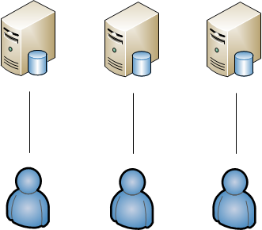

Database Build Process
Definitions
CI == Continuous Integration
Continuous Integration
In software engineering, continuous integration (CI) is the practice of merging all developer working copies to a shared mainline several times a day.
-- wikipediaGIT == Source Control (Distributed)
Stash
== Bit Bucket Server
== Web Application Integrates w/ GIT
Artifacts
One ore more files that make up a deployable system.
Centralized vs Sandbox
Database Development
Centralized

Sandbox
Sandbox database does NOT have a copy of all the data!
Components
- Sandbox
- Source Control / Continuous Integration
- Automated Deployment
Sandbox
Sandbox => Local Machine
Tools
- Cake
- SQL Developer Edition
- Roundhouse
Cake Build Scripts
RoundhousE
Database State Transitions
Scripts are organized by folders
Scripts in different folders run at different times
Up
folder contains the Transition Scripts
per environment scripts
Source Control & CI
Use a feature branch to develop a single deployable unit of work.

Submit pull request once feature branch is ready for deployment.

Include DBA on Database change Pull Request
Automated Deployment
Only deltas are deployed
Team City Deployment

Deployment Log
Only Method of Database Change Deployment
Database Version Tables

What changed?